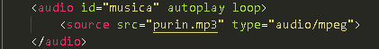
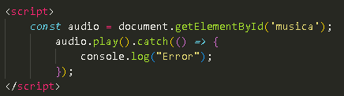
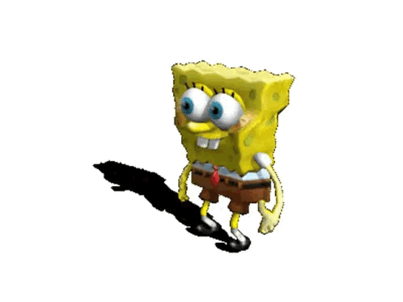

Bueno, lo primero que tenemos que tener es nuestro archivo de audio, obvio en mp3 jeje. Necesitaremos un script adicional, el cual puede realizarse dentro del mismo HTML :D y esta super sencillo, son unicamente 3 lineas.
Empecemos por comprender el funcionamiento desde 0, aqui usamos la etiqueta audio que le hace comprender al marcado que estamos hablando de un audio vaya, en el apartado id colocaremos el nombre del document que usaremos en nuestro scrip, y finalmente el autoplay loop que nos indica que el audio se repetira hasta que la pagina se cierre.
Despues llamaremos - usemos de hecho, ya que no estamos hablando de variables jeje- una etiqueta surce , que nos habla de links externos, o de links que se encuentren dentro de la carpeta en la cual estamos trabajando, el nombre de nuestro archivo de audio y el tipo, que en este caso sera: audio/mpeg y cerramos la etiqueta de audio.

Bien, en nuestra primera linea comenzaremos usando una variable constante ya que nuestro audio va a repetirse constantemente, nombraremos la variable audio y le asignaremos un get de elemento por ID, y en el id ponemos el nombre que se nos antoje, yo coloque musica , asi a secas. Puntito y coma, ahora para reproducir el audio tenemos que elaborar la siguiente estructura: nombre de la variable - play - catch que nos indica que el audio se va a reprodcir y se va a obtener el loop, ya lo demas es un aburrido mensaje de error, suele ocurrir si se tiene la reproduccion automatica desactivada.

Es lo que yo utilice para realizarlo, y es como yo lo he entendido, graciaas.

y eso es todo amigos